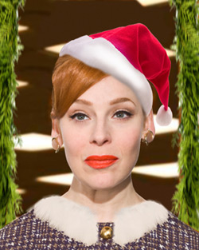

past performance | ||
|  |
THE MAD WORLD OF MISS HATHAWAY #5: Misogyny and Mistletoe Written by & Starring Angela Di Carlo with | |
synopsis:You don't have to be a Mad Men fanatic to savor The Mad World of Miss Hathaway, an episodic musical parody of the critically acclaimed TV drama. The show was most recently chosen by Time Out New York as a critics pick and has been featured as a Voice Choice in the Village Voice. After debuting episode #4 in October for two nights at The Wild Project to a packed crowd, Angela Di Carlo (Just to be Polite at Joe's Pub, Ange Rampage at The Triad) is getting a jump on the holiday season with a brand new Christmas themed episode, complete with antics and new songs sure to leave even the Grinchiest Grinch grinning from ear to ear. Each episode, Di Carlo imagines newfangled plots and spirited Mad songs as she portrays JoAnne Hathaway, the know-it-all head of the secretarial pool of Spencer-Colfax advertising agency circa 1965. For this very special holiday episode, she's joined by a hilarious all-star supporting cast, Mike Albo (Unitard) David Ilku (Dueling Bankheads) Amber Martin (Amber Alert!), Patrick Johnson (The Emperor's New Codpiece) and Adam Dugas (Chaos & Candy) back to reprise their roles and stop by annual office Christmas party. Come see who gets caught by the water cooler with their drink on and pants down! It's THE holiday event of the season not to be missed! | ||
upcoming performances |
|||
 |
|||
| EVQ Film Festival 2018 August 20-25 |
|||
performance archives |
|||
| 2018 | 2017 | 2016 | 2015 |
| 2014 | 2013 | 2012 | 2011 |
| 2010 | 2009 | 2008 | 2007 |